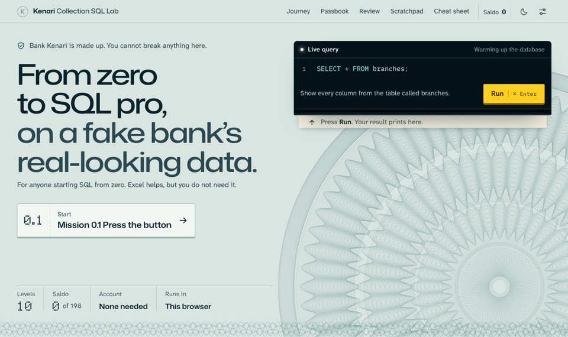
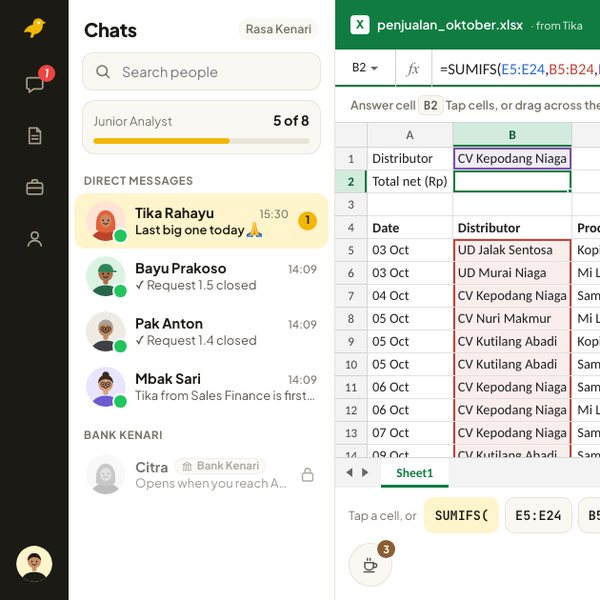

JS
Jeremy Subiakto
I built stuff (sometimes)

Kenari Collection SQL Lab
Learn SQL free, from zero to pro, on a made-up bank’s data.
198 missions · 10 levels

Kenari Excel Lab
Learn Excel free, from formulas to VBA macros.
LinkedIn